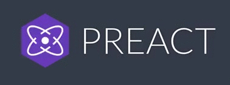
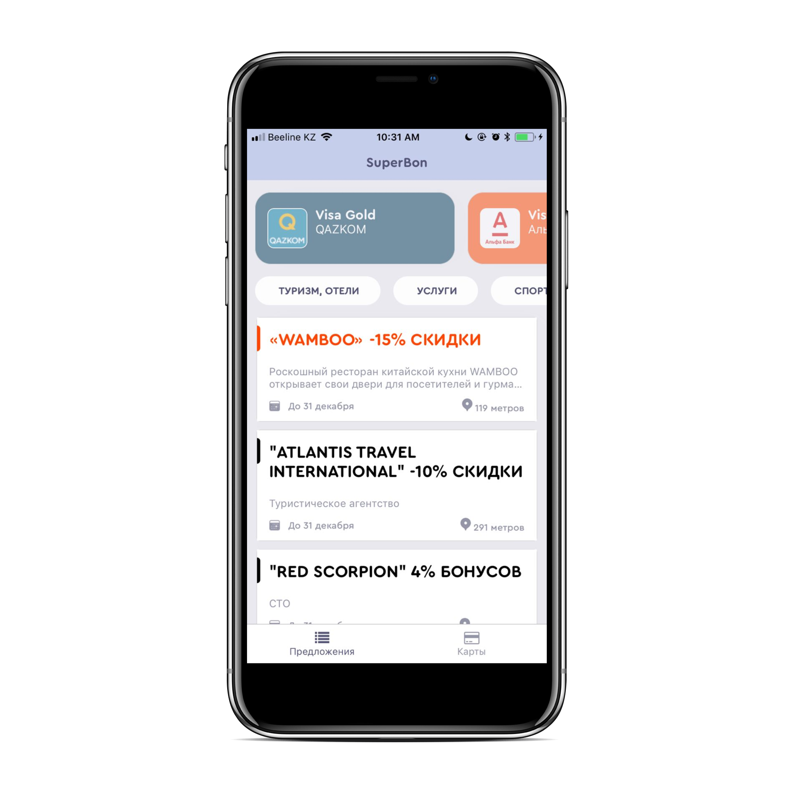
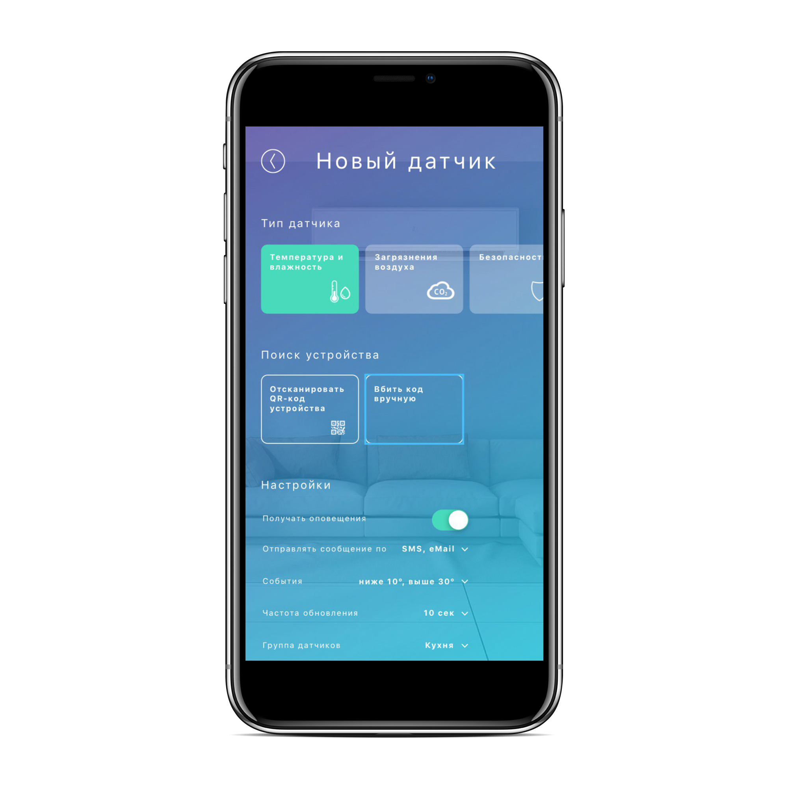
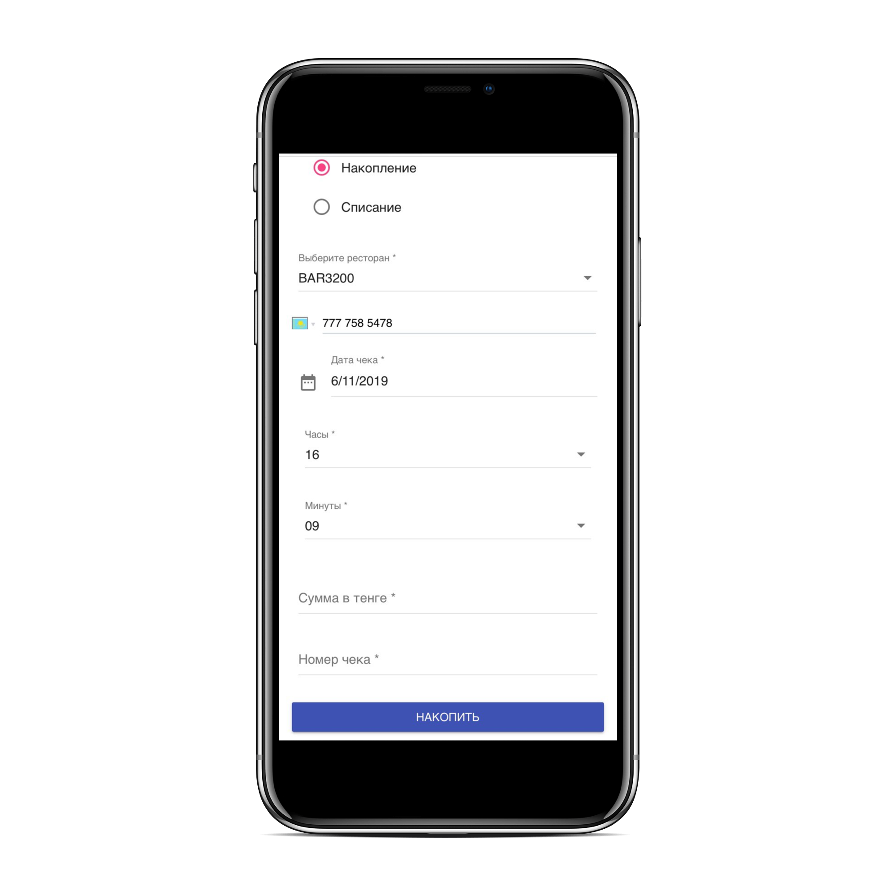
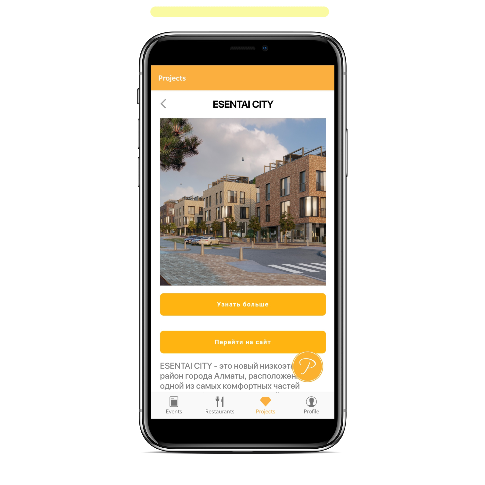

Бауыржан Шайхисламов

WebView
 @Baukaalm
@Baukaalm
 @baur_sha
@baur_sha
Привет, я фронтендщик
Что вдохновляет
- Быстрый фронтенд
- Красивый UI
- «Красивые» опенсорсы
Гибридные приложения облегчают жизнь
-
Быстро накидать прототип, возможен MVP и демонстрация
клиенту
-
Сделать за короткие сроки — сервис по обработке вводимых
данных
-
Сделать новый сервис уже в существующем нативном приложении
- Промо-приложения
Преимущества
- Экономия
- Кроссплатформенность
- Гибкость (работает в браузере)
Недостатки
- Безопасность
- Отсутствие нативного UI
- Отсутствие доступа к нативным API
- Скорость (скроллинг, анимация)
Отличие от нативных приложений
react-native компилируется в нативный код и не использует вебвью
PWA не нужно устанавливать как отдельное приложение через Google
play и App store
История трёх «гибридов» и одного нативного приложения




Вернёмся к вопросу и к успешным кейсам
Зачем нужны?
-
Быстро накидать прототип, возможен MVP и демонстрация
клиенту
-
Сделать за короткие сроки — сервис по обработке вводимых
данных
-
Сделать новый сервис уже в существующем нативном приложении
- Промо-приложения
Doorbell
-
Пример прототипа, который взаимодействует с IoT устройствами «умный дом»
- Успешная демонстрация через пару дней, довольный клиент
-
Seed
-
Быстро накидать прототип, возможен MVP и демонстрация
клиенту
-
Сделать за короткие сроки — сервис по обработке вводимых
данных
-
Сделать новый сервис уже в существующем нативном приложении
- Промо-приложения
SuperBon/MobileAdmin
-
Вполне юзабельный продукт который обрабатывает 200+ бизнес-процессов в день.
- Создан за максимально короткие сроки(1-2 дня), благодоря чему удалось провести ивент взаимодействующий с этим приложением
-
Работает в Offline
-
Быстро накидать прототип, возможен MVP и демонстрация
клиенту
-
Сделать за короткие сроки — сервис по обработке вводимых
данных
-
Сделать новый сервис уже в существующем нативном приложении
- Промо-приложения
JS
componentDidMount() {
//
const params = new URLSearchParams(paramsString);
const source = params.get('source');
if (!source) this.getCurrentPostiton();
this.fetchData();
}
Swift
//
let url = URL(string: "https://my.site.com?source=ios")!
webView.load(URLRequest(url: url))
JS
window.onExternalLocationUpdate =
this.onExternalLocationUpdate;
Swift
webView.evaluateJavaScript(
"window.onExternalLocationUpdate(
\(defaultLocation.coordinate.longitude),
\(defaultLocation.coordinate.latitude))"
Итоги
- Это хоть и не так практично, но быстро
- Сервисы успешно реализованы
- Гибкость (работает в браузере)